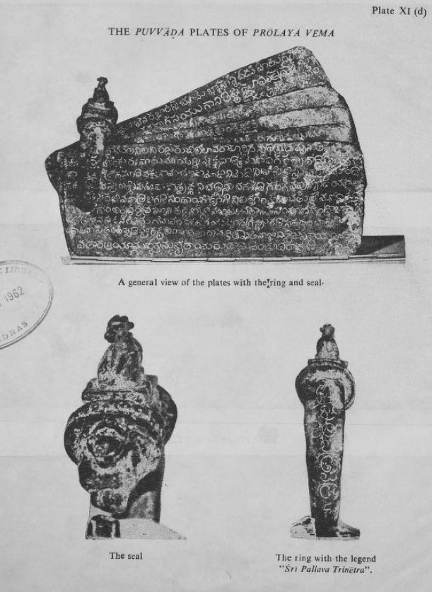

The Reddis and Velamas
After the Kakatiya fall in 1323, Telugu warrior lineages at Kondavidu, Rajahmundry and Rachakonda ruled coastal Andhra between the two great powers.

When Delhi destroyed the Kakatiya kingdom of Warangal in 1323, its Telugu country did not pass whole to any successor. In the coastal plain Prolaya Vema Reddi set up a kingdom at Addanki around 1325 that his successors moved to the hill fort of Kondavidu, with a second branch at Rajahmundry on the Godavari from 1395. In the interior of Telangana the Recherla Velama chiefs held the forts of Rachakonda and Devarakonda from about 1360. Kondavidu fell to Vijayanagara in 1424 and Rajahmundry to the Gajapatis of Orissa about 1448; the Recherlas were absorbed by the Bahmanis in the 1430s and survived as local chiefs into the 1470s.
These were warrior states rather than dynasties of long standing. Cynthia Talbot’s study of Andhra inscriptions shows that the Reddi, Velama and Kamma lineages had risen as Kakatiya officers in the thirteenth century and that their fourteenth-century kingdoms used the same tools of temple endowment, fort-building and inscription to establish themselves. They fought one another as much as the larger powers: the Recherlas allied with the Bahmanis against the Kondavidu Reddis, then turned and fought beside Vijayanagara at Pangal in 1419, which brought a Bahmani response that cost them Warangal and Rachakonda. The Reddi court at Kondavidu and Rajahmundry was also the centre of Telugu letters in the period; the poet Srinatha served the Reddis before moving south to Vijayanagara.
The Andhra kingdoms show that for a century the Deccan had more than two sovereignties. The Telugu coast was a third zone, claimed by the Bahmanis from the north-west, by Vijayanagara from the south-west and by Orissa from the north, and governed in between by lineages that were both independent and, at any given moment, somebody’s allies. Their disappearance by the 1470s left the coast to be divided between Vijayanagara, Orissa and the new Qutb Shahi state at Golconda.
In the story
The collection’s story would be simpler if there had been only two Deccan powers, and this entry is a reminder that there were not. The Reddi and Velama states were sovereign in their own inscriptions and clients in everyone else’s, and the difference depended on the year. They are the first instance of a recurring type in the timeline, the intermediate polity, later represented by the nayakas, the Maratha sardars and the Nizam’s tributaries.
In the chronology
- c. 1325–1475Reddi and Velama polities rule parts of coastal Andhra and Telangana between larger powers.